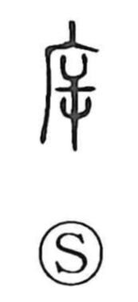

斥

Kun: shirizokeru | On: seki
to repel ・ to drive away ・ to reject ・ to scout
Explanation
Because no oracle-bone or bronze forms are known, its sense is inferred from the present graph. The shape evokes an axe set to wood, and it can also be read as a human figure, reversed as if coming from outside, set before the sign of a building. Seen from this side, it pictures a person drawing back from a house—keeping one’s distance and avoiding contact. From that image arise the uses “to repel or reject,” “to drive away, exorcise,” and, by extension, “to scout or reconnoiter.”